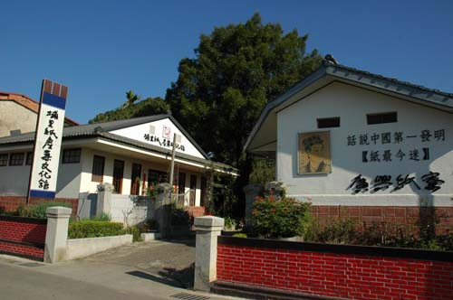
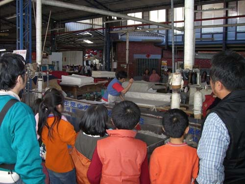

廣興紙寮 創立於 1965年（民國54年）， 由 黃耀東 先生創辦。 埔里擁有良好的水質與造紙環境，過去曾發展出興盛的造紙產業， 廣興紙寮也曾生產高品質手工宣紙，外銷日本、韓國。
早期以代工為主，後轉型生產手工宣紙。隨著時代變遷， 埔里傳統造紙產業逐漸式微，廣興紙寮則轉型為結合 傳統工藝、 文化保存、 觀光 與 教育 的場所， 保存手工造紙的技術與文化。
參觀時可以認識傳統造紙的流程——蒸煮、漂洗、打漿、抄紙、壓水與烘乾， 也能參加 手工造紙 及 紙藝DIY 體驗， 親手感受紙張從無到有的溫度。
廣興紙寮也將埔里在地的 茭白筍殼、 檳榔樹幹 等農業剩餘資源轉化為手工紙， 讓傳統造紙與環境永續、地方產業產生連結。
廣興紙寮 的歷史，是一部埔里造紙產業的縮影。 從民國54年創立「廣興製紙加工所」，到民國62年開始手工宣紙內銷， 民國80年成功研發高品質手工宣紙外銷日韓，達到巔峰。 而後由第二代黃煥彰先生接手，順應時代潮流， 將紙寮轉型為文化傳承與體驗教育的場域。
如今，走進廣興紙寮，不僅能親眼見證一張紙的誕生， 更能體會到職人對傳統工藝的堅持與熱情。 從原料到成品，每一個步驟都蘊含著埔里這片土地的溫度， 以及台灣手工造紙產業的韌性與生命力。